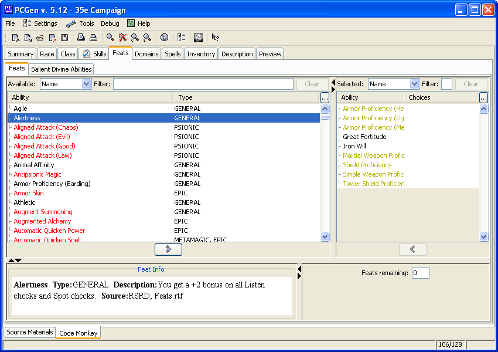

This is the Feats tab. Here the user will choose which feats, loaded from the sources, to add to the character.
The number in the upper-left contains the list of ‘Feats Remaining’ to be chosen.
Next to the word "Available" is a selection box that lets the user pick which "view" to use. It is this view, which will be used to determine the structure of the table below it. The same is true for the "Selected" feats, which list the feats already selected for the PC.
By default the feats for the PC'selected as optional feats are in black text in the Selected table. Feats gained automatically (due to a race or class property) are displayed in dark-yellow text. Feats gained virtually (typically this means there's some restriction on them) are displayed in magenta text. Virtual or automatic feats cannot be removed or changed the selections of virtual or automatic feats. By clicking on the Filter icons in the toolbar (the icons with the magnifying glass.)
To add a feat by double-clicking on it, right clicking on it or clicking on it and the on the right-arrow button. Similarly to remove feats, or alter the selections of optional feats which have choices, by double-clicking on it in the "Selected" table, or by right-clicking on it there, or by selecting it and then clicking on the left-arrow button above the table. As elsewhere in PCGen anything that is not qualified for is in red italics.
The info-pane in the bottom-left will provide details about any feat clicked upon - including any pre-requisites and its source.